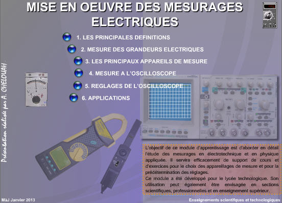
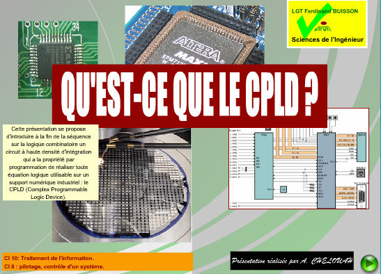
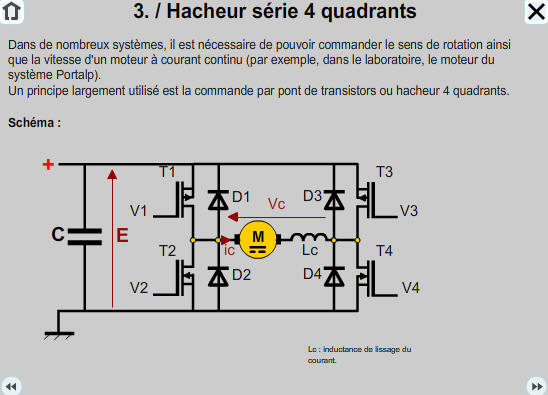
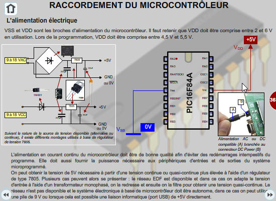

Cette rubrique propose des cours multimédias et animations interactives pour aborder
les mesurages électriques, l’utilisation de l’oscilloscope, la logique programmable (CPLD),
les hacheurs et les microcontrôleurs, du niveau lycée au post‑bac.

Mise en œuvre des mesurages électriques
Mots‑clés : mesurages, oscilloscope, signaux périodiques, fréquence, valeurs crêtes, efficace, moyenne
Cours complet portant sur la mesure électrique et électronique avec des rappels
concernant les principales définitions à retenir et une introduction pratique
à l'utilisation de l'oscilloscope et à l’interprétation des signaux obtenus
en tenant compte des caractéristiques des appareils de mesure.
Voir l’animation

Cours sur le CPLD
Mots‑clés : CPLD, logique programmable, circuits intégrés, électronique numérique
Cours multimédia introduisant les CPLD (Complex Programmable Logic Devices),
leurs caractéristiques, leur architecture et les applications pratiques en électronique numérique.
Voir l’animation

Cours sur le hacheur
Mots‑clés : hacheur, convertisseur DC‑DC, électronique de puissance, modulation
Présentation du hacheur comme convertisseur DC‑DC, son fonctionnement, ses modes de conduction
et les applications en électronique de puissance pour réguler ou transformer les tensions continues.
Voir l’animation

Cours sur le microcontrôleur – Partie 1 : généralités
Mots‑clés : microcontrôleur, microprocesseur, architecture, programmation, entrées/sorties
Cours introductif sur les microcontrôleurs : définition, domaines d’application,
place dans les systèmes électroniques et questions clés autour de ce composant omniprésent
dans notre environnement technique.
Voir l’animation

Cours sur le microcontrôleur – Partie 2 : mise en œuvre
Mots‑clés : microcontrôleur, architecture interne, programmation, entrées/sorties
Suite du cours sur les microcontrôleurs : architecture interne, principes de fonctionnement,
gestion des entrées/sorties, programmation et applications pratiques en automatique et robotique.
Voir l’animation